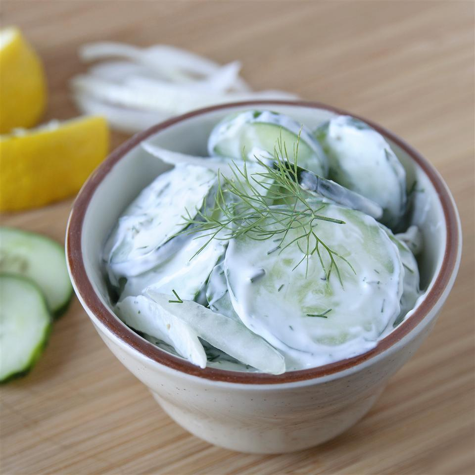

Cucumber Salad

Description
Cucumber Salad recipe (from allrecipes, by Brandi Rose)
Ingredients
- half cup reduced-fat sour cream
- 2 tablespoons fresh lemon juice
- 2 tablespoons chopped fresh dill
- 3 cucumbers, halved lengthwise and thinly sliced crosswise
- half cup thinly sliced red onion
- coarse salt and ground black pepper to taste
Steps
- Mix sour cream, lemon juice, and dill together in a bowl. Add cucumbers and onion; stir to combine. Season with salt and black pepper.